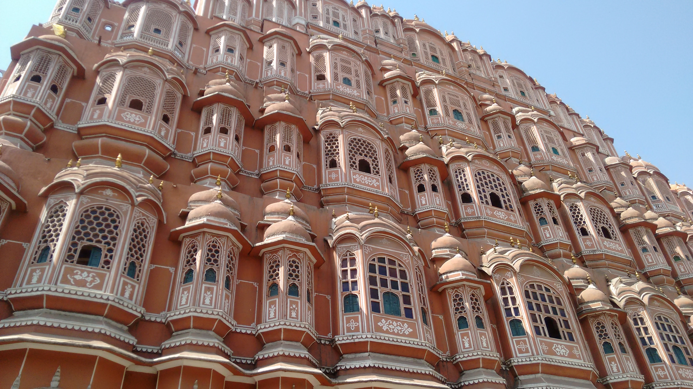
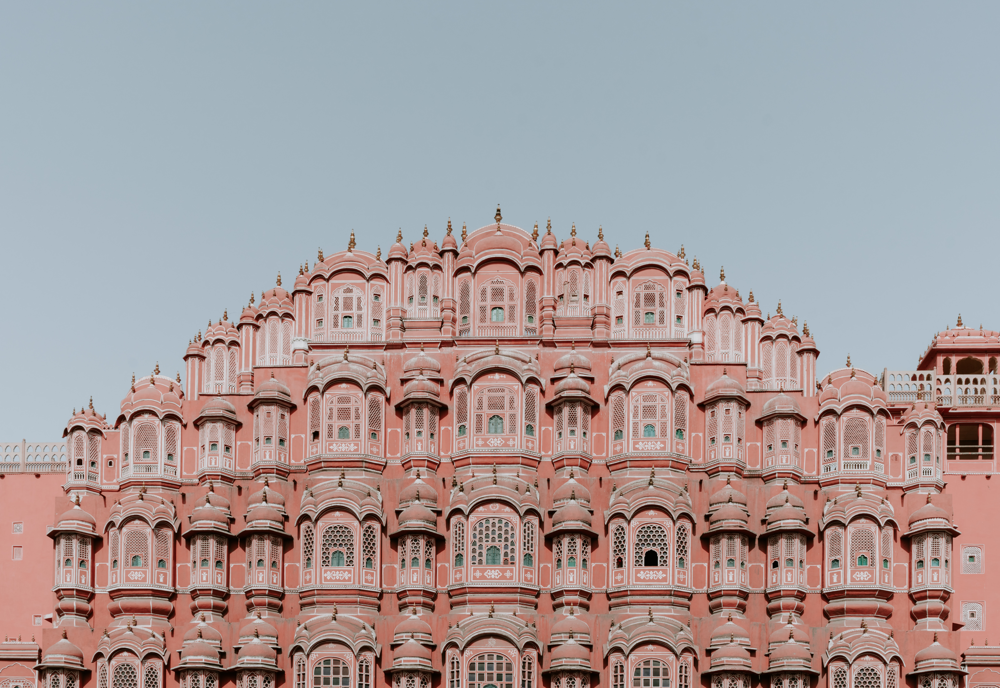

Hawa Mahal: A Marvel of Architectural Ingenuity in India
Introduction:
India, a land steeped in history and culture, boasts a rich tapestry of architectural marvels. Among these,
the Hawa Mahal, or the "Palace of Winds," stands as a testament to the creative genius of its architects.
Located in the heart of Jaipur, Rajasthan, this iconic structure has captured the imagination of visitors
for centuries. In this essay, we will explore the history, architecture, significance, and enduring appeal
of the Hawa Mahal.
Historical Background:
The Hawa Mahal was built in 1799 by Maharaja Sawai Pratap Singh, a member of the Kachhwaha Rajput dynasty.
The motivation behind its construction was both practical and aesthetic. The palace was designed to serve as
an extension of the City Palace and a place for the royal women to observe street festivals and daily life
without being seen by the public.
Architectural Marvel:
The most striking feature of the Hawa Mahal is its unique architecture. The five-story structure is
constructed of red and pink sandstone, which is characteristic of Jaipur's architecture. Its most
distinctive feature is its façade, which is adorned with 953 small windows, or jharokhas, intricately
designed with latticework. These jharokhas not only provide ventilation but also create an effect resembling
a honeycomb, giving the palace its name – the Palace of Winds. The jharokhas also allow cool air to
circulate through the palace, making it a respite from the scorching Rajasthan heat.
Significance:
The Hawa Mahal is not merely a beautiful palace; it holds historical and cultural significance. It served as
a private retreat for the royal women, who could observe the activities on the bustling streets below
without compromising their modesty. Additionally, the palace symbolizes the grandeur and architectural
prowess of the Rajput rulers of Rajasthan.
Enduring Appeal:
Over the centuries, the Hawa Mahal has continued to capture the imagination of people from all over the
world. Its delicate architecture and intricate design are a testament to the skill of the craftsmen of that
era. Today, it stands as one of Jaipur's most famous landmarks and a popular tourist attraction.
Conclusion:
The Hawa Mahal is not just a building; it is a living piece of history and a symbol of the cultural heritage
of Rajasthan. Its unique architectural design, historical significance, and enduring appeal make it a
must-visit destination for anyone exploring the rich heritage of India. As visitors stand in awe of its
intricate façade, they are transported back in time to an era of grandeur and opulence, where even the winds
whispered tales of Rajasthan's royal past.
WIKI